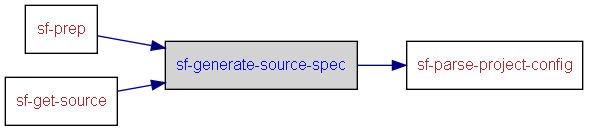

|
Helium API | ||||||
| prev next | frames no frames | ||||||
Location
d:\maintools\sf-config\common\build.xml:157:
Conditional execution
No conditions on target execution.
| Name |
|---|
| perl |
| Name | Edit status |
|---|---|
| User editable properties | |
| Internal properties | |
| build.id | discouraged |
| build.log.dir | discouraged |

<target name="sf-generate-source-spec">
<!-- Generate the sources.csv if hg cache is activated -->
<if><istrue value="${sf.spec.sourcesync.usecache}"/>
<then>
<echo message="Generating Hg local cache..."/>
<mkdir dir="${sf.common.config.dir}/generated"/>
<exec executable="perl" dir="${build.log.dir}" failonerror="true" output="${build.log.dir}/${build.id}_hgcache.log">
<arg value="${sf.common.config.dir}/tools/cachefiles.pl"/>
<arg value="${sf.spec.sourcesync.cachelocation}"/>
<arg value="${sf.project.location}/${sf.spec.sourcesync.sourcespecfile}"/>
<arg value="${sf.common.config.dir}/generated/${sf.spec.sourcesync.sourcespecfile}"/>
</exec>
</then>
</if>
<!-- TODO: 1. Same file name souce-spec.ant.xml is used for all packages
for multiple package builds, this needs to be linked with package name. -->
<!-- TODO: 2. Change fmpp data to be a full property rather than relative path -->
<delete file="${sf.common.config.dir}/generated/source-spec.ant.xml"/>
<fmpp sourceFile="${sf.common.config.dir}/templates/source-spec.ant.xml.ftl" outputFile="${sf.common.config.dir}/generated/source-spec.ant.xml">
<data expandProperties="yes">
ant: antProperties()
data: csv(${sf.spec.sourcesync.sourcespecdir}/${sf.spec.sourcesync.sourcespecfile}, {separator:','})
</data>
</fmpp>
</target>
|
Helium API | ||||||
| prev next | frames no frames | ||||||